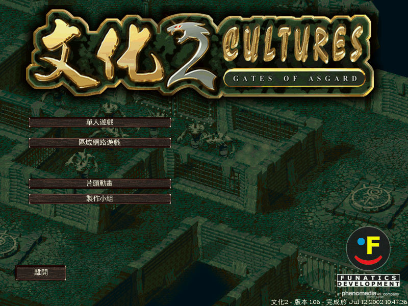
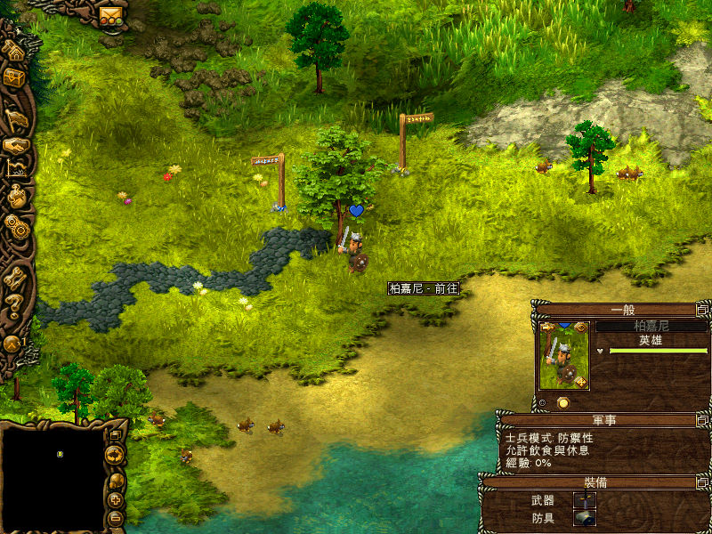

名稱：文化2 (Cultures 2: Gates of Asgard，中文／英文版)
簡介：Funatics 2002年出品的城鎮建造模擬遊戲，由JoWooD代理發行，2003年由光譜中文化
並代理發行 [待補]。


保護：光碟SecuROM 4.68+序號（UX6Y-G7TA-PYOO-16WP-LB29）
備註：繁中版為1.06版
檔案：nocd105.rar = 英文1.05免光碟檔
nocd107.rar = 英文1.07免光碟檔
cht.rar = 1.06繁中漢化檔